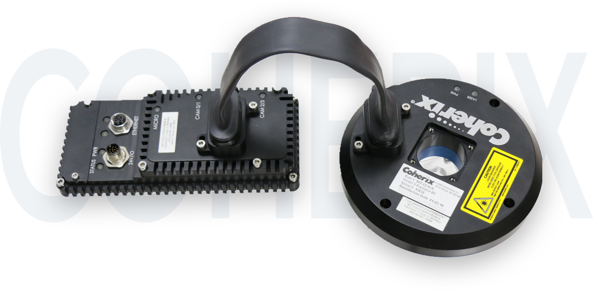

Whether you’re manufacturing automotive engines or circuit boards, today’s products demand increasingly strict tolerances, requiring advances in measurement and inspection tools. Even the smallest error can be the difference between a product launch and a major delay. It is essential to have tools that confirm the quality and accuracy of your processes and ultimately, your products. The key to assessing the quality of these different elements is robust measurement and inspection tools combined with advanced analysis and visualization software.
Robust3D Error Proofing Solutions
Coherix Robust3D offers a highly reliable solution to a variety of challenges in automotive assembly processes. By imaging over one million data points on a part with structural light, 3D model will be formed and analyzed by i-Cite software.
Predator3D Bead Inspection
Predator3D solution product is the latest Coherix 3D machine vision technology for structural adhesive and dispensing sealant bead inspection. Smart, automatic and affordable, Coherix is leveraging its SHARK™ platform technology, 3D experience, and i-Cite™ software to bring this low-cost, high-performance 3D bead inspection solution to market.